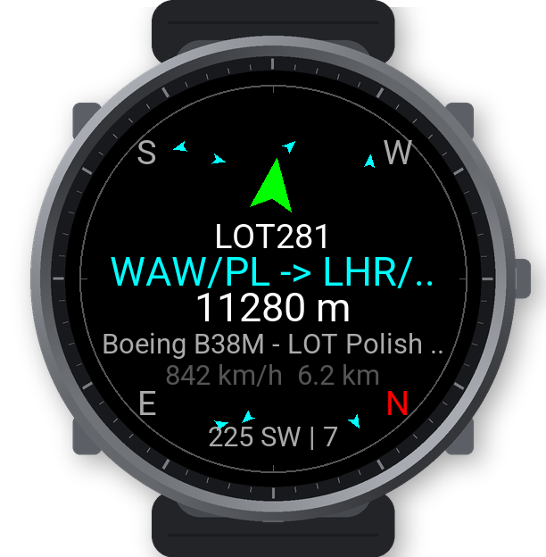
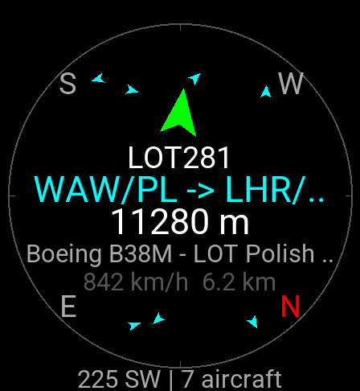

Planes Above Me shows the live air traffic around you on a compass. For the aircraft you are facing, it shows its destination, aircraft type, altitude, speed and operator.
It finds anything that broadcasts ADS-B: airliners, small airplanes, helicopters, business jets, cargo and military flights.
Screenshots


What you see
- A compass radar with every aircraft within range, drawn as a triangle pointing along its course, in all directions.
- The aircraft in front of you, large: callsign, route (for example "WAW/PL -> LHR/GB London"), altitude, type and operator, speed and distance. An arrow shows where to look and turns green when you face it.
- A detail page with origin and destination airports, manufacturer and type, operator, registration, country, altitude, speed and course.
- Lock: follow one aircraft across the sky; the arrow keeps pointing at it as you turn.
- A list of all aircraft nearby, nearest first.
Search radius (default 10 km) and refresh interval (default 30 s) can be set in the menu on the watch or in the Connect IQ settings on your phone.
How to use
- Start Planes Above Me outdoors and wait for GPS.
- Point the watch at the aircraft you see. The one in front of you is shown large.
- Tap the screen (or press Start) for the detail page. Start on the detail page locks the aircraft, so the arrow follows it.
- Swipe up for the list of all aircraft nearby. Swipe in from the right edge for the menu (refresh, search radius, refresh interval, About).
Requirements
- A Garmin watch with GPS. "What you're facing" needs a compass (magnetometer).
- A paired phone with Garmin Connect and an internet connection. Live flight data comes from the internet.
Supported watches: Venu X1, Venu 2/2 Plus/2S/3/3S, Venu Sq 2, vívoactive 5, fēnix 7/7S/7X, epix (Gen 2), Forerunner 255/265/265S/955/965.
FAQ
- It shows an error on the status line.
- The app needs a connection to your phone with Garmin Connect running and internet access.
- An aircraft I can see is not shown.
- Only aircraft that broadcast ADS-B and are received by the OpenSky Network appear. Some small or military aircraft do not broadcast, and positions can be a few seconds old.
- The route is wrong.
- Routes are looked up by callsign and can be out of date. On the detail page open the menu and choose "Re-check route" to look it up again from a second source.
- The arrow points the wrong way.
- Calibrate the compass in the watch settings (Sensors → Compass), away from metal.
Support the app
Planes Above Me is free and has no ads. If you enjoy it, you can support its development with a donation.
Contact
Questions and bug reports: garmin.dev@leisoft.cz
Credits
Live aircraft positions: The OpenSky Network. Aircraft and route data: adsbdb.com and hexdb.io.